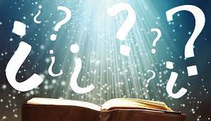
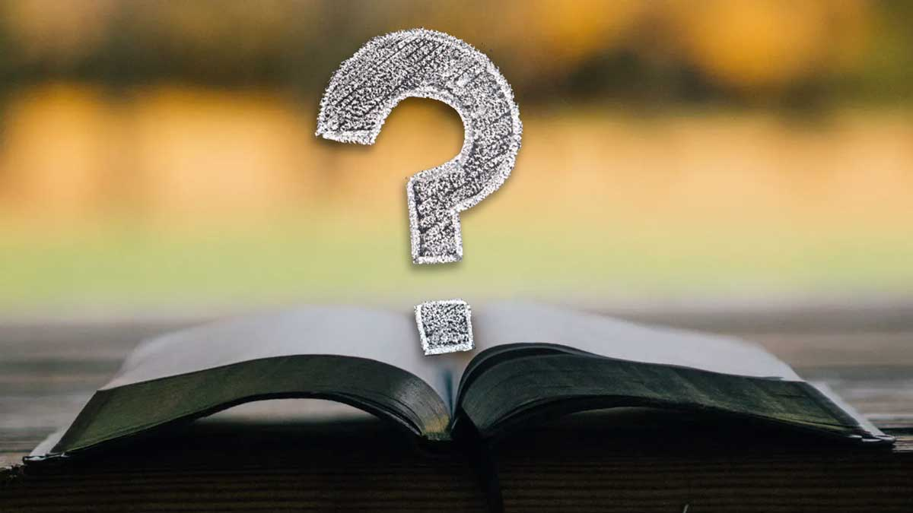

ALGUNAS CONTRADICCIONES
Hoy en dia han sido objeto de analisis las siguientes:
"El Castigo al Padre"
La Biblia escribe:
Sabemos que según el pasaje de DEUTERONOMIO 24:16, ni padres ni hijos morirán por los pecados de otros:
“Los padres no morirán por sus hijos,
ni los hijos morirán por sus padres; cada uno morirá por su propio pecado.”

La Contradiccion
Sin embargo, en el pasaje de ISAÍAS 14:21 se narra algo bien diferente:
“Preparad para sus hijos el matadero a causa de la iniquidad de sus padres;
que no se levanten y tomen posesión de la tierra,
y llenen de ciudades la faz del mundo”

La Biblia es un libro difícil de leer. Claro, hay algunas historias fascinantes y bella poesía para admirar, pero gran parte de la Biblia se compone de antiguos códigos legales, historias de oscuros reyes y extrañas profecías sobre el juicio de Dios.
Sin embargo, los cristianos creen que hay algo especial en este libro; creen que Dios se revela a través de sus historias y enseñanzas. Pero, ¿y si las propias historias no son verdaderas? ¿Y si las enseñanzas se contradicen entre sí? ¿Y si hay equivocaciones, errores, inconsistencias y contradicciones en la Biblia? ¿Eso no pondría todo en tela de juicio? ¿Cómo se puede confiar en la Biblia?
Leer mas
¿Era Jesús un hombre de paz?
La Biblia escribe:
Según los pasajes de JUAN 14:27 y HECHOS 10:36, Jesús era un hombre pacífico destinado a traer amor entre los hombres. Citando textualmente el segundo de los pasajes:
“El mensaje que El [Dios] envió a los hijos de Israel,
predicando paz por medio de Jesucristo, que El es Señor de todos”
La Contradiccion
Sin embargo, son varios los pasajes de la Biblia que retratan a Jesús como un impartidor de justicia. Así se describe a sí mismo en MATEO 10:34:
“No penséis que vine a traer paz a la tierra; no vine a traer paz, sino espada.
Porque vine a poner al hombre contra su padre, a la hija contra su madre,
y a la nuera contra su suegra”
A lo largo de la historia se nos ha comentado que Jesucristo fue un hombre que llego a "salvar" las almas de los pecadores. Pero a fin de cuentas el medio que se use para su fin (Paz o Ira) demuestra la humanidad que habia en el.
Leer mas
RECUERDE COMPARTIR SU OPINION
¿Acaso las contradicciones aparentes significan que la Biblia no es realmente la Palabra de Dios?
Aquí hay algunas cosas para considerar.

La Biblia es un libro difícil de leer. Claro, hay algunas historias fascinantes y bella poesía para admirar, pero gran parte de la Biblia se compone de antiguos códigos legales, historias de oscuros reyes y extrañas profecías sobre el juicio de Dios.
Sin embargo, los cristianos creen que hay algo especial en este libro; creen que Dios se revela a través de sus historias y enseñanzas. Pero, ¿y si las propias historias no son verdaderas? ¿Y si las enseñanzas se contradicen entre sí? ¿Y si hay equivocaciones, errores, inconsistencias y contradicciones en la Biblia? ¿Eso no pondría todo en tela de juicio? ¿Cómo se puede confiar en la Biblia?
Leer mas
¿Acaso las contradicciones aparentes significan que la Biblia no es realmente la Palabra de Dios?
Aquí hay algunas cosas para considerar.

La Biblia es un libro difícil de leer. Claro, hay algunas historias fascinantes y bella poesía para admirar, pero gran parte de la Biblia se compone de antiguos códigos legales, historias de oscuros reyes y extrañas profecías sobre el juicio de Dios.
Sin embargo, los cristianos creen que hay algo especial en este libro; creen que Dios se revela a través de sus historias y enseñanzas. Pero, ¿y si las propias historias no son verdaderas? ¿Y si las enseñanzas se contradicen entre sí? ¿Y si hay equivocaciones, errores, inconsistencias y contradicciones en la Biblia? ¿Eso no pondría todo en tela de juicio? ¿Cómo se puede confiar en la Biblia?
Leer mas
Ver mas entradas